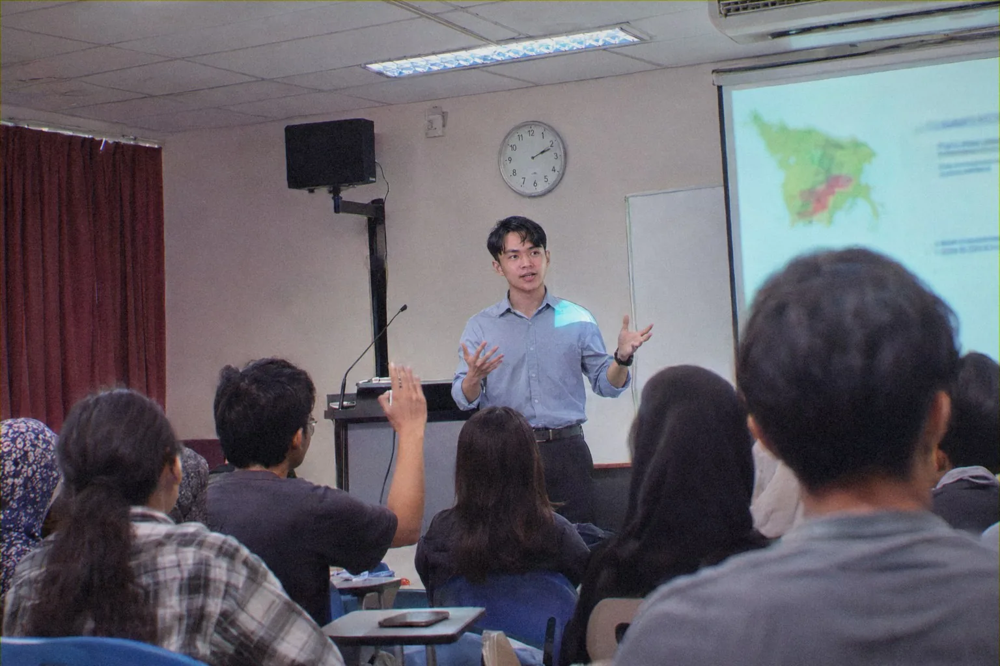

Universiti Malaysia Sabah
Home university in Kota Kinabalu with the faculties, students and field-station access BorneoStack would draw on for Kinabatangan hydrology and Danum canopy work.
www.ums.edu.myFor universities, field stations, NGOs, and grant bodies interested in open environmental data and joint research.
Final-year and internship projects on flood mapping, mangrove change or AI code auditing, with data, compute and weekly supervision.
A scoped, 6–8 week pilot on an existing operational question, delivered as a reproducible notebook your own team can re-run.
Your field records validate our satellite models; our maps extend your records across the landscape. Credit and data rights agreed in writing first.
We partner on applied innovation and conservation grants and publish every non-sensitive output openly.


Workflow
We share relevant pipelines and listen to your question.
A clear one-page scope covering responsibilities, data rights, and credit.
A focused joint output published openly in weeks, not months.
For multi-year engagements using your institution’s agreement templates.
Ecosystem
Researched from each organisation’s own public work. Entries listed here are prospective; no formal agreement exists yet. Logos appear only with signed agreements or open data attribution rules.
Home university in Kota Kinabalu with the faculties, students and field-station access BorneoStack would draw on for Kinabatangan hydrology and Danum canopy work.
www.ums.edu.my
Tropical biodiversity and forest ecology institute, a natural partner for ground-truthing Danum Valley canopy remote sensing.
www.ums.edu.my/ibtp
UMS computing faculty: the route to student co-supervision and shared work on applied AI, sensing pipelines and AI code auditing.
fki.ums.edu.myMarine and coastal science institute at UMS, relevant to mangrove mapping and coastal validation data.
www.ums.edu.my/imb
Sister Bornean university whose resource-science and engineering groups overlap with peatland, mangrove and river-sensing methods across the island.
www.unimas.my
Cardiff University and Sabah Wildlife Department field centre on the Lower Kinabatangan, directly on BorneoStack's flood and hydrology sensing site.
www.danaugirang.com.my
Runs the Danum Valley and Maliau research platforms, the practical gateway for canopy remote-sensing fieldwork and permits.
www.searrp.org
Kinabatangan-based orangutan and wildlife research NGO, a field partner on the same river corridor.
hutan.earth
Runs Sabah conservation and Kinabatangan landscape programmes and could use mangrove and canopy maps.
www.wwf.org.my
Sabah conservation and sustainability network that convenes the NGOs and agencies BorneoStack would need to reach.
www.foreversabah.orgState flood-forecasting and river-gauge authority, the key source for Kinabatangan water-level data and a likely end user of flood alerts.
did.sabah.gov.myState agency that regulates research access and biodiversity data in Sabah, relevant to permits and data sharing for any field sensing study.
sabc.sabah.gov.my
Regulator for environmental impact assessments and water quality, a potential user of mangrove and river-monitoring outputs.
epd.sabah.gov.my
Manages Kinabalu Park, Tun Mustapha Park and other protected areas where canopy and mangrove mapping could be applied.
www.sabahparks.org.my
Co-manages the Kinabatangan wildlife sanctuary and partners Danau Girang, so its habitat and flood-risk concerns shape the sensing work.
wildlife.sabah.gov.my
Manages Sabah's forest reserves including Danum Valley's surrounds, the main end user for canopy and forest-cover mapping.
forest.sabah.gov.my
Holds the Danum Valley Conservation Area concession through its forestry arm, a stakeholder for access and canopy research.
www.yayasansabahgroup.org.my
Regional development authority whose corridor plans cover the Kinabatangan and east coast, relevant to funding and flood-resilience programmes.
sedia.com.my
National source of rainfall, radar and forecast data that would feed Kinabatangan flood models.
www.met.gov.my
National hydrology research institute, relevant to river-basin modelling and climate-impact flood studies.
www.nahrim.gov.my
National digital agency with grants and programmes for AI startups, relevant to funding BorneoStack's AI code auditing.
www.mdec.my
Malaysian deep-tech and startup funder offering seed grants for early-stage applied AI ventures.
www.cradle.com.my
Technology commercialisation accelerator that could host or fund sensing and AI pilots.
mranti.my
Source of free Sentinel-1 and Sentinel-2 imagery used for flood extent, mangrove and canopy mapping.
Data source www.copernicus.eu/en
Open access to GEDI lidar, Landsat and MODIS data for Danum canopy structure and wetland monitoring.
Data source www.earthdata.nasa.gov
Provides ALOS PALSAR radar and AW3D elevation data, key for flood and mangrove mapping through cloud cover.
Data source www.eorc.jaxa.jp/ALOS
Open forest-loss and land-cover alerts to benchmark BorneoStack's canopy and mangrove products against.
Data source www.globalnaturewatch.org
Reference global mangrove extent and change dataset to validate and extend Sabah mangrove maps.
Data source www.globalmangrovewatch.orgTell us which question you are exploring. We will respond with a scoped, practical first step.